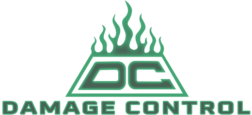

DC Wiring
Automotive wire harness design, inside Obsidian.
Schematic
Draw it once. Signals follow the net.
Connectors, splices, terminals and cables. Click a wire and its whole net lights up.

Parts
Assign real parts. What fits comes first.
Right-click any connector or wire, or create the part from the component.

Layout
Lay out the bundles. Wire lengths follow.
Branch points, coverings like corrugated tube and tape, counted by the metre.

Bill of materials
Every contact, seal and metre, counted.
Configurations add contacts per cavity by wire gauge. Prices total up as you go.
Wiring list
From, to, signal, gauge, length.
Export CSV, SVG or a printable PDF report.

DC Wiring
Your harness is a plain .DC file in your vault.
Obsidian community plugin · MIT